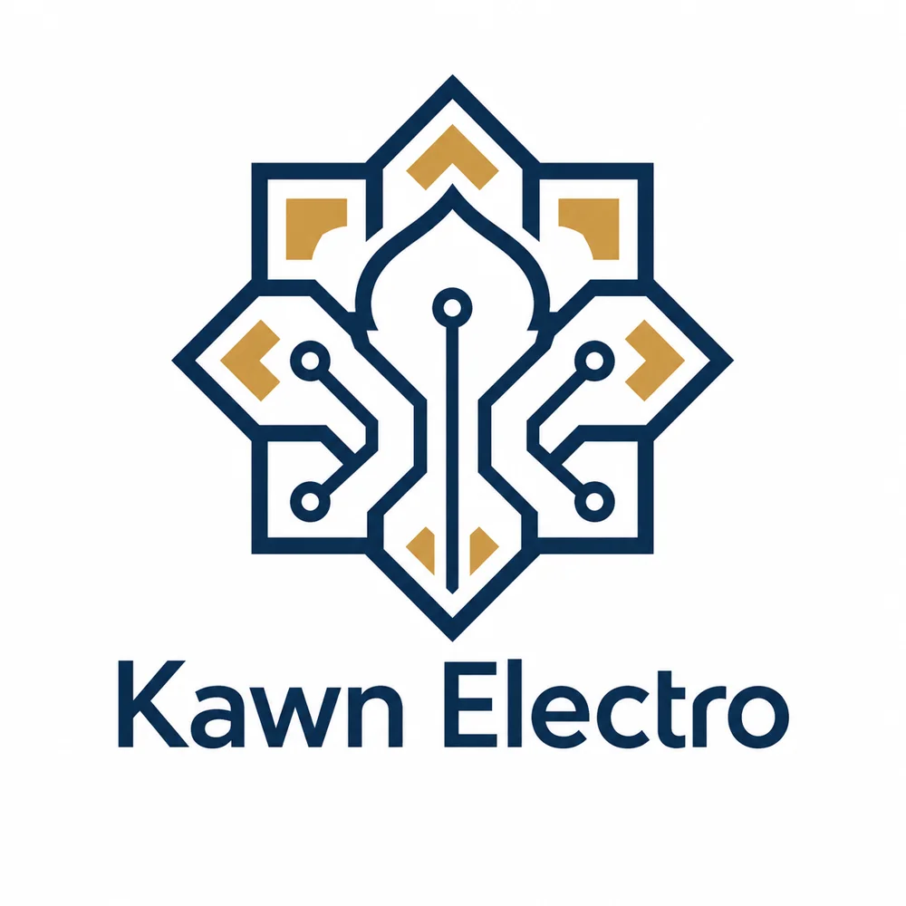
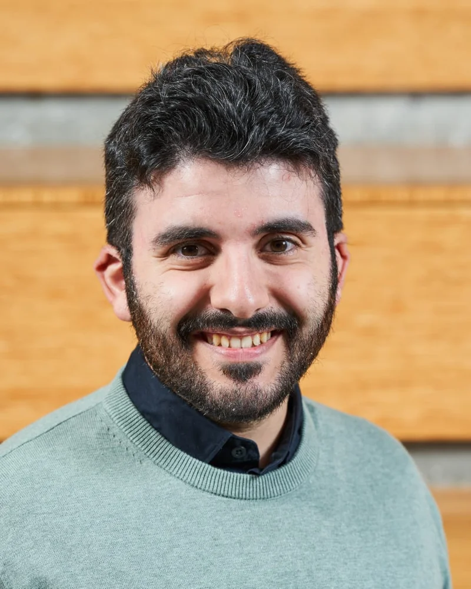

A small lab.
A long-term idea.
Independent hardware engineering in Saudi Arabia, with an open approach to building the Zaman experience.
The lab
Kawn Electro is a solo engineering lab dedicated to modular, repairable, long-lasting hardware. Every design decision prioritises longevity and interoperability — we reject planned obsolescence in favour of devices that owners can upgrade, repair, and reconfigure over time.
Based in Saudi Arabia, the lab is committed to open-ecosystem design. Whether the project is consumer electronics or smart-home devices, the goal stays the same: hardware that respects its owner's intelligence and investment.
Visit kawnelectro.com ↗Modularity is not a feature — it's a philosophy.

KAWN ELECTRO'">
KadhemThe founder
Kadhem is a hardware engineer and tech enthusiast with a passion for modular, repair-friendly electronics. His work spans embedded systems, smart-home gadgets, and industrial devices — driven by the belief that great hardware should grow with its user, not be replaced.
With a professional certificate in PCB design (CPCD by PCEA) and a hands-on approach to prototyping, he brings both professional rigour and maker creativity to every project at Kawn Electro.
CPCD · Certified PCB Designer (PCEA)Get in touch
kadhem.alabdulmuhsin@kawnelectro.comBASED IN SAUDI ARABIA
Be first in line — and tell us what your ultimate retro console looks like.